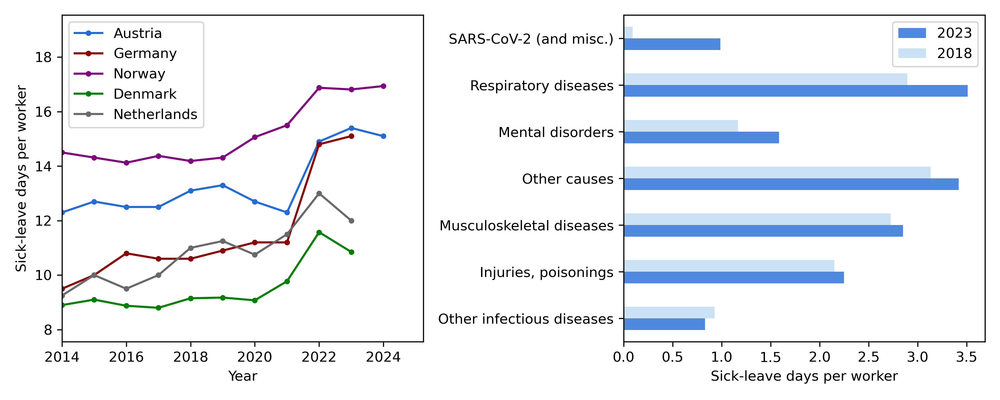

The starting date of the SLORA project is confirmed to be 01.07.2026.
Der Starttermin des SLORA-Projekts ist für den 01.07.2026 bestätigt.
AboutÜber das Projekt
Sick leave has increased noticeably in Austria since the end of the COVID-19 measures. Respiratory illnesses appear to play an important role in this development, but the underlying reasons are still not well understood. This creates a challenge not only for the health-care system, but also for workers, employers, social insurance providers, and policymakers who need reliable evidence when discussing prevention and sick-leave policies.
Seit dem Ende der COVID-19-Maßnahmen sind die Krankenstände in Österreich deutlich gestiegen. Atemwegserkrankungen scheinen dabei eine wichtige Rolle zu spielen, die zugrunde liegenden Ursachen sind jedoch noch nicht gut verstanden. Dies stellt nicht nur das Gesundheitssystem vor Herausforderungen, sondern auch Arbeitnehmer:innen, Arbeitgeber:innen, Sozialversicherungsträger und politische Entscheidungsträger:innen, die für Präventions- und Krankenstandspolitik verlässliche Evidenz benötigen.
The Sick Leave On the Rise in Austria (SLORA) project, funded by the Data:Research:Austria (ÖAW) programme, develops targeted, data-driven surveillance of respiratory disease-related sick leave. A research team from epidemic modelling, wastewater epidemiology, infectious disease surveillance, complexity science, and health-data analysis is working together to connect different types of information in a shared modelling framework. The project will combine Austrian administrative and survey data from the Austrian Micro Data Center, sick leave data, vaccination data, and wastewater-based surveillance data.
Das im Rahmen des Programms Data:Research:Austria (ÖAW) geförderte Projekt Sick Leave On the Rise in Austria (SLORA) entwickelt eine gezielte, datengetriebene Surveillance respiratorisch bedingter Krankenstände. Ein Forschungsteam aus Epidemiemodellierung, Abwasserepidemiologie, Infektionssurveillance, Komplexitätswissenschaft und Gesundheitsdatenanalyse arbeitet zusammen, um unterschiedliche Informationsquellen in einem gemeinsamen Modellrahmen zu verknüpfen. Das Projekt kombiniert österreichische Register- und Umfragedaten aus dem Austrian Micro Data Center, Krankenstandsdaten, Impfdaten und abwasserbasierte Surveillance-Daten.
At the centre of the project is ALPIN, the Austrian Labor-stratified metaPopulation Infection Network. ALPIN is a computer model that links the spread of respiratory infections with the datasets. It will be used to test several possible explanations for the recent rise in sick leave, including undetected SARS-CoV-2 infections, changes in immunity or virus circulation after the pandemic, changes in sick-leave behaviour, and vaccination patterns.
Im Zentrum des Projekts steht ALPIN, das Austrian Labor-stratified metaPopulation Infection Network. ALPIN ist ein Computermodell, das die Ausbreitung respiratorischer Infektionen mit den verwendeten Datensätzen verknüpft. Damit werden verschiedene mögliche Erklärungen für den jüngsten Anstieg der Krankenstände getestet, darunter unerkannte SARS-CoV-2-Infektionen, Veränderungen der Immunität oder Viruszirkulation nach der Pandemie, verändertes Krankenstandsverhalten und Impfmuster.
The recommendations and forecasts derived from SLORA are intended to support public-health authorities, policymakers, employers, and labour organizations in making fair and evidence-based decisions.
Die aus SLORA abgeleiteten Empfehlungen und Prognosen sollen Gesundheitsbehörden, politische Entscheidungsträger:innen, Arbeitgeber:innen und Arbeitnehmer:innenvertretungen bei fairen und evidenzbasierten Entscheidungen unterstützen.

Sick leave on the rise. (a) Yearly sick-leave days per worker in European countries with updated and open sick-leave APIs. (b) Distribution of causes behind sick-leave days in Austria in 2018 and 2023. Data source: WIFO. The SARS-CoV-2 and miscellaneous category refers to Chapter XXII of the ICD-10 classification, dedicated to special-purpose codes including COVID-19 diseases.
Krankenstände nehmen zu. (a) Jährliche Krankenstandstage pro Arbeitnehmer:in in europäischen Ländern mit aktualisierten und offenen Krankenstands-APIs. (b) Verteilung der Ursachen von Krankenstandstagen in Österreich in den Jahren 2018 und 2023. Datenquelle: WIFO. Die Kategorie SARS-CoV-2 und Sonstiges bezieht sich auf Kapitel XXII der ICD-10-Klassifikation, das Sondercodes einschließlich COVID-19-Erkrankungen umfasst.